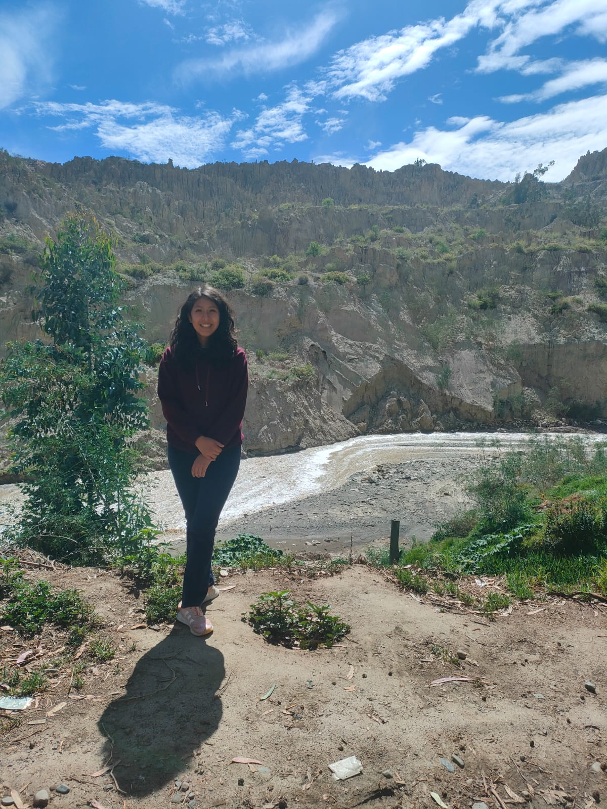

Ariana Flor Velasquez Suxo | WDD 130
Hello my name is Ariana Flor Velasquez Suxo, I am from La Paz Bolivia, I love to play basketball, I wish to be a professional basketball player, I am good to shoot over three point line, I am a good shooter,I am studyng chemestry at the university, and one of my dreams is to be a renowned scientist. One of my hobbies is to sing, I love to sing, also I like to teach, espcially to teach kids, I think that they are so special.